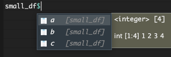

temps_F <- c(26, 21, 24, 32, 33, 41, 51)R Basics 4: Vectorized Operations and Data Frames
r-basics
1 Introduction
We are going to continue our discussion about vectors that Horacio started last week and talk about vectorized operations. It’s fine if you don’t know what this means, you will by the end of today’s session. We are also going to introduce the idea of a data frame.
2 What are vectorized operations?
I think its easier to see 👀 an example of a vectorized operation, and then we can explain what is happening under the hood.
Let’s create a vector of high temperatures for the weather in Columbus OH in Fahrenheit from the last 7 days. I took this data from January 19 to 25, 2024.
We can call our vector to see what it contains.
temps_F[1] 26 21 24 32 33 41 51A reminder that:
\[ °F = 1.8 * °C + 32 \]
With some light rearrangement, we can write the code below so we can plug in a temp in Fahrenheit, and get out one in Celsius.
temps_C <- (temps_F - 32)/1.8
temps_C[1] -3.3333333 -6.1111111 -4.4444444 0.0000000 0.5555556 5.0000000 10.5555556Here, we simply use the vector temps_F as we would any single number in a smple mathematical operation, and we convert each element or number in our our entire vector using the formula we provide. As a result, we can convert every element of our vector from Fahrenheit to Celsius.
It is worth mentioning that this is unique in R - many other programming languages would require a for loop or similar to do this operation, but because R is a vectorized language, this works easily and simply.
Here is another example. Imagine you have a vector of values and you want to calculate the log base 2 value for each element.
raw <- c(20, 36, 42, 53)
log2 <- log2(raw)
log2[1] 4.321928 5.169925 5.392317 5.727920This is an example where we apply a formula transformation to a vector, but we can also use vectorized operations with two vectors.
3 Vector by vector operations
Let’s create some vectors. Note I am not using the c() function to create the vector - since I am using the : to indicate a string of integers from number 1 to number 2, under the hood, R automatically makes this a vector. If you were to use the c() function though you would get the same result.
# create a vector with the values from 1 to 10, incrementing by 1
# vector_1to10 <- c(1:10) would also work
vector_1to10 <- 1:10
vector_1to5 <- 1:5
vector_1to3 <- 1:3
vector_0to4 <- 0:4
What do you think will happen if we try and add
vector_1to10 and vector_1to5?
# a vector reminder
vector_1to10 [1] 1 2 3 4 5 6 7 8 9 10vector_1to5[1] 1 2 3 4 5# adding
vector_1to10 + vector_1to5 [1] 2 4 6 8 10 7 9 11 13 15We see that vector_1to5 gets recycled, meaning once the 5 elements in the vector have been used, the addition starts back from the beginning again. If we want to be explicit:
- Element 1 of
vector_1to10gets added to element 1 ofvector_1to5 - Element 2 of
vector_1to10gets added to element 2 ofvector_1to5 - Element 3 of
vector_1to10gets added to element 3 ofvector_1to5 - Element 4 of
vector_1to10gets added to element 4 ofvector_1to5 - Element 5 of
vector_1to10gets added to element 5 ofvector_1to5. - Element 6 of
vector_1to10gets added to element 1 ofvector_1to5
and so on…
⚠️ This happens without R explicitly telling you this is happening. We do not get a warning.
What do you think will happen if we try and add
vector_1to10 and vector_1to3?
# a vector reminder
vector_1to10 [1] 1 2 3 4 5 6 7 8 9 10vector_1to3[1] 1 2 3# adding
vector_1to10 + vector_1to3Warning in vector_1to10 + vector_1to3: longer object length is not a multiple
of shorter object length [1] 2 4 6 5 7 9 8 10 12 11⚠️ We see that vector_1to3 gets recycled, but now we have a warning. We get this because the vector lengths are not divisible by each other to produce an integer. R still will perform our operation, but it tells us hey this might not be exactly what you want.
What do you think will happen if we try and divide
vector_1to10 by vector_0to4?
vector_1to10 / vector_0to4 [1] Inf 2.000000 1.500000 1.333333 1.250000 Inf 7.000000 4.000000
[9] 3.000000 2.500000We see that vector_0to4 gets recycled, but now we have a new output we haven’t seen before, Inf which stands for infinity/infinite.
If we are then to try and sum this vector:
sum(vector_1to10 / vector_0to4)[1] InfWe get an answer of infinite. This is because we have at least one infinite value, so including it as part of a sum makes that sum infinite too.
⚠️ Think about how this might work if you have NAs in your vector
4 Filtering vectors
We can also write code that allows us to filter our vector based on certain conditions. What if we wanted to know which observations had data where the temperature was above freezing? We could use a mathematical operator (in this case, >) to find instances when the statement we provide is true.
temps_C > 0[1] FALSE FALSE FALSE FALSE TRUE TRUE TRUEWhen we run this code, we get a series of values corresponding to each element of the vector, and whether or not the statement we have prompted with (temps_C > 0) is true or false.
If we wanted to see how many observations meet these criteria, we can take advantage of the fact that TRUE is coded as 1, and FALSE and 0.
sum(temps_C > 0)[1] 3We know then that there are 3 observations where the temperature is above freezing.
If we want to know which observations are above freezing, we can use the function which() which shows us the indices of the elements in our vector for which our code evaluates to TRUE.
which(temps_C > 0)[1] 5 6 7This tells us that the 5th, 6th, and 7th elements in our data have temperatures higher than freezing. In our vector we don’t have the specific days associated with each temperature embedded. We can assign meta-data to our values by using the function names() for our vector. I’ll show you how to do that below.
# create a new vector that has the dates we want to assign
dates <- c("1/19", "1/20", "1/21", "1/22", "1/23", "1/24", "1/25")
# we can assign these dates as the "names" of our vector temps_C
names(temps_C) <- dates
# now our temps have dates associated with them
temps_C 1/19 1/20 1/21 1/22 1/23 1/24 1/25
-3.3333333 -6.1111111 -4.4444444 0.0000000 0.5555556 5.0000000 10.5555556 If you knew you wanted to do this at the outset, you could create the vector along with its names all at once using the handy function structure().
(temps_F_names <- structure(temps_F,
names = dates))1/19 1/20 1/21 1/22 1/23 1/24 1/25
26 21 24 32 33 41 51 You can also set other attributes using the function
structure().
You might use the sometimes, but more likely you would want to work using a data frame.
5 Practice
Create a vector of 10 numbers, beginning at 2, incrementing by 11. Remember, if you call
help() or put a ? before a function, you can learn more about its arguments and use. You might want to look back to last week’s Code Club if you don’t remember the simplified function for doing this.
a_vector <- seq(from = 2, by = 11, length.out = 10)
a_vector [1] 2 13 24 35 46 57 68 79 90 101
How many of these values are even? Yes I know that I haven’t showed you how to do this but I am confident you can figure out how to :)
A zero remainder means the number is even.
# use modulo operator %% to see if a number is even
# if the remainer is 0, it is even
a_vector %% 2 [1] 0 1 0 1 0 1 0 1 0 1# how many are even?
10 - sum(a_vector %% 2)[1] 56 What is a data frame?

Below I am creating a simple data frame, this is a rectangular data object with rows and columns. In reality, you will probably be reading your data in from a .csv or .xlsx file, but you can also construct a data frame directly in R. We are doing this with the function data.frame() which is a part of base R.
# create a simple 3 by 4 data frame called small_df
# columns are a, b, and c
# values are numbers from 1 to 4, 5 to 8, and 9 to 12
small_df <- data.frame(a = 1:4,
b = 5:8,
c = 9:12)Let’s look at small_df.
small_df a b c
1 1 5 9
2 2 6 10
3 3 7 11
4 4 8 12We can think about a data frame as being composed of a series of vectors (as columns) squished together. In the case above, each column is of the same type, integer or numeric but this doesn’t have to be true. Note the first column of 1:4 is actually the row index - you can tell this as it doesn’t have a column name.
Vectors all must be of the same object type (i.e., character, numeric, logical). In a data frame, each column can be a different object type. This is very useful especially when you have to have meta-data combined with numeric data.
We call use some new functions to look more at our data frame.
View() will open our data frame like you might be used to looking at a spreadsheet in Excel.
View(small_df)str() gives us the structure of the object x.
str(small_df)'data.frame': 4 obs. of 3 variables:
$ a: int 1 2 3 4
$ b: int 5 6 7 8
$ c: int 9 10 11 12dim() gives us the dimensions of x.
dim(small_df)[1] 4 3
Note that when referring to a two-dimensional piece of data, R uses the syntax [rows, columns]
Note, that if you use dim() on a vector (which has only one dimension), you will get something unexpected.
# this doesn't work
dim(temps_C)NULLFor a vector, instead you should use the function length() to figure out how many elements are in the vector.
# this does work
length(temps_C)[1] 77 Performing operations on a data frame
Now that we have our small_df we can try performing some operations on it.
What if you wanted to take the log base 2 for every value in small_df? Just like we did for a vector, we can simply use the function log2() on small_df. Here I am assigning the output of this to a new data frame called small_df_log2.
(small_df_log2 <- log2(small_df)) a b c
1 0.000000 2.321928 3.169925
2 1.000000 2.584963 3.321928
3 1.584963 2.807355 3.459432
4 2.000000 3.000000 3.584963Remember, if you assign something to an object, but also want it to print at the same time, just surround the whole thing in parentheses.
What if I wanted to take the log base 2 of only column a? There are a few ways I can do that.
7.1 By indexing
I can use the square brackets [] to access certain parts of my data frame. Remember for data frames, the syntax is [rows, columns]. Let’s try some example where we access by using indices (i.e., the position of the row, column, or the combination) to grab different parts of our data frame.
# first row, second column
small_df[1,2][1] 5# all rows, second column
small_df[,2][1] 5 6 7 8# third row, all columns
small_df[3,] a b c
3 3 7 11Is there any difference as to the types of objects we get when doing these different types of selection? We can use the function str() to see what type of R object we have in the different scenarios.
# first row, second column
str(small_df[1,2]) int 5# all rows, second column
str(small_df[,2]) int [1:4] 5 6 7 8# third row, all columns
str(small_df[3,])'data.frame': 1 obs. of 3 variables:
$ a: int 3
$ b: int 7
$ c: int 11Back to the original idea - how would we take the data only from column a and log base 2 transform it, but leave the rest of small_df as it is?
# first save our df with a new name
# this is like doing a "save as" for an existing df
small_df_log2_a <- small_df
# log2 transform the first column, and then assign that back to the first column
small_df_log2_a[,1] <- log2(small_df[,1])
# check to see if it worked
small_df_log2_a a b c
1 0.000000 5 9
2 1.000000 6 10
3 1.584963 7 11
4 2.000000 8 12Note that column a now is the object type “dbl” or numeric, instead of “int” or integer, since our log2 transformation has made our values no longer integers.
7.2 By name
We can also index by providing column names - this is a nice approach since when going back to read code, a column name is often more informative than a column index/number. Note that in this case the column name a is in quotes since it is a character string.
# all rows, the column "a"
small_df[,"a"][1] 1 2 3 4We can also use the dollar sign accessor $ to extract an element in a data frame or list. In the case of a data frame, you are accessing a column (though you could be accessing something else if a different type of object). Note that when you type the name of a data frame, and then the $, R will prompt you with some possible column names.

small_df$a[1] 1 2 3 4By using this syntax, you are turning your data frame into a vector. This may or may not be what you want to do, so just be aware.
Accessing certain observations can also be performed using the
tidyverse functions select() and filter(). If you don’t know what I’m talking about simply ignore this, we will go over it in a future Code Club.
8 Practice
Create a new data frame and assign it to the variable df. Give is 5 columns and 3 rows, and add some numbers in each of the cells, it doesn’t matter what they are.
# i'm just using different ways to creating strings of numbers
df <- data.frame(col_1 = c(2, 3, 4),
col_2 = seq(from = 5, to = 10, by = 2.5),
col_3 = 4:6,
col_4 = rnorm(3, mean = 10, sd = 2),
col_5 = rep(x = 6, times = 3))df col_1 col_2 col_3 col_4 col_5
1 2 5.0 4 8.706182 6
2 3 7.5 5 13.453908 6
3 4 10.0 6 7.366212 6
Multiply all of column 1 by column 2.
Here are some different ways to do this.
df$col_1 * df$col_2[1] 10.0 22.5 40.0df[,1] * df[,2][1] 10.0 22.5 40.0df[,"col_1"] * df[,"col_2"][1] 10.0 22.5 40.0
Create a sixth column that is the result of the addition of columns 3 and 4.
col_6 <- df$col_3 + df$col_4
new_df <- data.frame(df,
col_6)new_df col_1 col_2 col_3 col_4 col_5 col_6
1 2 5.0 4 8.706182 6 12.70618
2 3 7.5 5 13.453908 6 18.45391
3 4 10.0 6 7.366212 6 13.36621
How does having NAs in a vector change the class of your vector?
test_NA_1 <- c(1, 2, 3, 4, NA)
class(test_NA_1)[1] "numeric"test_NA_2 <- c(1, 2, 3, 4, "NA")
class(test_NA_2)[1] "character"